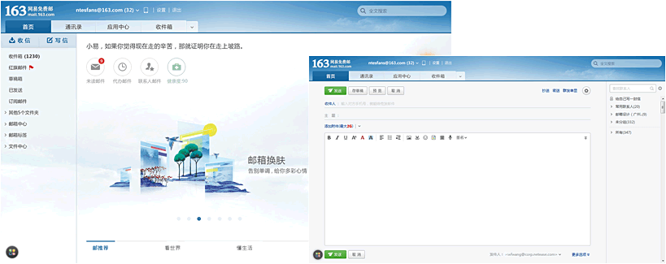
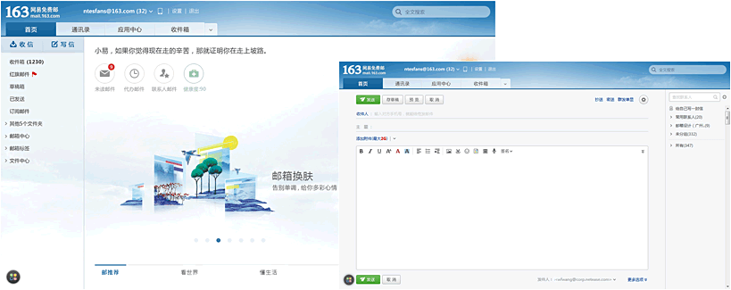

网易邮箱6.0版——2014年最具创意气质的重量级新邮箱，重生光华，为之瞩目。唯美
的视觉设计和视觉化交互，无可替代的独创动态情景皮肤，多项国内创意产品专利技术，
成就无与伦比的出众品味，无可比拟的美妙体验。


[ 视觉·简 ]
华丽蜕变，尽享愉悦之美
秉承网易邮箱经典的清新简洁的设计风格，邮箱 6.0 版带来全新一代的
设计理念，更追求极致唯美的视觉设计、传承更多人文和艺术底蕴，华
丽蜕变，带来更舒服更爽心悦目的视觉享受.
 



邮箱 6.0 版采用了全新的视觉化交互设计，通过对界面的整
体风格设计、重要信息的视觉化处理以及元素本身的视觉
传达优化，来实现产品流程设计和交互行为塑造。从视觉的
角度出发，让用户无需多想，直接通过感官与产品进行交互。
体风格设计、重要信息的视觉化处理以及元素本身的视觉
传达优化，来实现产品流程设计和交互行为塑造。从视觉的
角度出发，让用户无需多想，直接通过感官与产品进行交互。
[ 视觉化交互设计]


国内首创动态情景皮肤，可以随着早晚时光，季节主题的变幻而自动切
换，实现了在邮箱里也能感受天气和心情的变化，带来完全不同的页面
体验并且呈现最佳视觉感受，还特别针对原有邮箱皮肤的对比度和色彩
进行了微调，减少视觉疲劳感。
换，实现了在邮箱里也能感受天气和心情的变化，带来完全不同的页面
体验并且呈现最佳视觉感受，还特别针对原有邮箱皮肤的对比度和色彩
进行了微调，减少视觉疲劳感。

[ 动态情景皮肤 ]